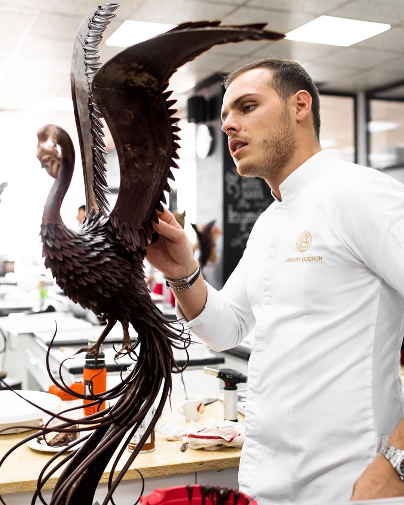

O naszej firmie
Pewnego letniego wieczoru w toskańskiej tenucie, wśród woni lawendy i sosen piniowych, gawędziliśmy przy suto zastawionym, drewnianym stole. Słuchaliśmy „The look of love”. Wypoczęci i zrelaksowani, jedliśmy pizzę którą właśnie wyjęliśmy z ogrodowego pieca. Soczyste pomidory, oliwki, pachnące zioła, dojrzałe figi zerwane w ogrodzie…
W tej cudownej atmosferze, przy czerwonym winie rozmawialiśmy o deserze. Żona i moi przyjaciele, namawiali mnie na rozwijanie pasji kulinarnych, a wszyscy byli już wielbicielem moich ciast i tortów.
To właśnie wtedy podjąłem życiową decyzję, narodziła się wizja cukierni, kolorów, stylu i usłyszałem nazwę: „Czekoladowy”.
Świat stanął na głowie! Uświadomiłem sobie, że już jako mały chłopiec, uwielbiałem pomagać mojej Babci w kuchni. Od czekolady Babuni zaczęły się moje zamiłowania kulinarne. W czasach wyrobów czekoladopodobnych – jej smakołyki były rarytasem i stały się dla mnie prawdziwą ucztą dla zmysłów i źrodłem inspirujących pomysłów.
Później nadal byłem blisko tych tematów… w latach studenckich pracowałem w malutkiej kawiarence, i wiecie co? Do tej pory wspominają moją kawę…
Przełomowym okresem w moim życiu, była kilkuletnia współpraca z niesamowitą Magdą Gessler… z jej witalnością i zapałem kulinarnym. W tym czasie, dla mojej ukochanej a teraz żony, kandyzowałem fiołki zerwane o świcie na łące… Wartościowe i urocze wspomnienia!
Wszystko biegło w jednym kierunku… I tak w 2011 roku, rok po toskańskiej decyzji, 8 września otworzyłem Cukiernię Czekoladowy w rodzinnym Lublinie. Moim wiodącymi wyrobami są czekoladowe torty z owocowym ganachem, ciasta, kruche tarty oraz lody naturalne.
Ci wspaniali ludzie, których spotkałem na swojej drodze, najbliższe kobiety wytrwale mnie wspierające, pomogli mi odkryć w sobie duszę artysty, wrażliwego na piękno i smak otaczającego Świata.
Zapach, barwa, forma, dbałość o każdy detal, wyważona kompozycja. I tak do dziś.
Podążanie za pasją, zainteresowaniami, marzeniami jest cenne, jednak sukces dużo lepiej smakuje, gdy można zajmować się tym co się kocha profesjonalnie. Zawodowe szlify kulinarnych pasji zdobyłem kończąc: Akademię Sztuk Pięknych w Łodzi na kierunku Projektowanie Kulinariów a także wiele kursów i szkoleń, prowadzonych przez uznanych mistrzów sztuki cukierniczej, między innymi Jeana-Pierre Wybauw oraz Ramona Morato i Alexandra Bordeaux. Natomiast wiedzę z obszaru zarządzania i marketingu na rodzimej Politechnice Lubelskiej na Wydziale Zarządzania.
Chęć podzielenia się z Państwem zamiłowaniem do sztuki kulinarnej, skłoniła mnie do stworzenia wraz z moim cennym zespołem utalentowanych, chętnych do działania i przepełnionych pozytywną energią współpracowników, autorskich tortów, ciast i lodów – innych niż wszystkie… Ich smaki, możecie doświadczyć razem ze mną w Cukierniach Czekoladowy!
A wszystko co dzieje się w moim kulinarnym Świecie zobaczycie na tej stronie. Będę kusił Was wybornymi łakociami i mam nadzieję, że znajdziecie tu życiowe inspiracje i sposób na podarowanie sobie, swoim przyjaciołom i rodzinie odrobiny przyjemności.